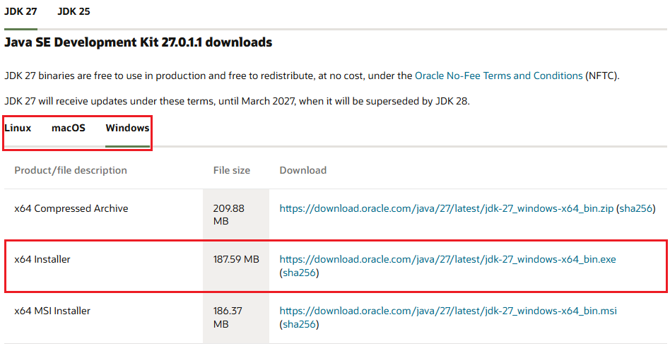
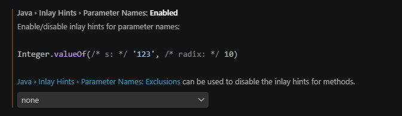

Setup language Essentials
Java
Before you can compile the Java language, you must first install the Java development kit located at the link provided.
You can code in the language, but you will find that an error will occur because your computer will not recognize how to
read nor execute the program written in the language. At the time of this writing Orcale allows users without an account
to download Java SE Development Kit versions 27.0.1.1 and 25.0.5.1 while creating an account will allow for earlier versions.
Note: that if a program is written in latest version, it cannot be read by an earlier installed version.
Java Development Kit
Below is an image showing the kit download for Windows. Ensure that you are dowloding the correct version for your platform.

Java Extentions and Settings in Visual Studio Code
You can turn off the Java inlay hints such as x: or s: to help with confusion as as you will learn proper coding over time.
By default, it is set to literal; change this setting to none. Search the settings by either pressing [ctrl][+][,] simultaneously or
locating the gear icon in the bottom left corner of the VS Code window. Type "java inlay" and it should be the first option.

Common Issues
You may or may not notice yellow squiggly lines at the top of the java text document indicating that you have not declared a package,
this is a common warning if the source folder for your project is not correct. Ensure that you have opened your root folder for your
project. If you have done that and are still getting the warning, save your project, exit VS Code and the open VS code again. If you
are still encountering the warning you may have to try placing a .json file in your root directory of the project folder force VS Code
to recognize each file path; though, if installed correctly, this method should not be necessary.
Note: The yellow squiggly lines should not impact execution, they are simply annoying.